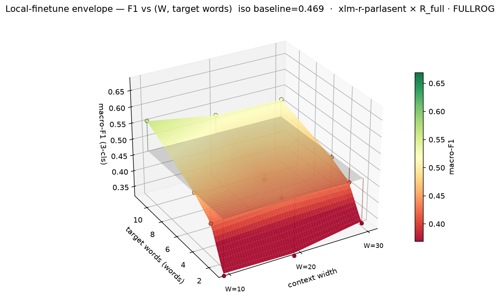

Three XLM-R backbones × seven data mixtures (parliament text, parliament speech transcripts, dialogue). Pure parliament → dialogue transfer is broken. ROG alone is too small — plain backbones collapse to "neutral". Mixing all three sources (SPR) is the only path that holds positive R² on dialogue.
| key | sources | meaning |
|---|---|---|
S | parlasent_sl | parliament text, published 6-cls labels |
P | parlaspeech_si | parliament speech transcripts, XLM-R-ParlaSent self-labels (⚠ self-labelled on parlasent backbone) |
R | rog_dia (≥2 s) | ROG dialogue, 2 s-filtered train split |
SP, SR, PR, SPR | unions of the above | pairwise + triple on 2 s-filtered ROG |
R_full | rog_dia_full | ROG dialogue train, no 2 s filter (~10 k rows) |
SR_full, PR_full, SPR_full | unions with full-ROG | same mixing, full-ROG train swapped in for R |
Backbones: xlm-roberta-large (= FacebookAI/xlm-roberta-large, baseline, no sentiment pretrain) ·
xlm-r-parla (= classla/xlm-r-parla, parliamentary MLM continue-pretrain, no sentiment head) ·
xlm-r-parlasent (= classla/xlm-r-parlasent, parla + ParlaSent sentiment regression head).
| backbone | mixture | 3-cls F1 | 6-cls F1 | R² | note |
|---|---|---|---|---|---|
| XLM-R-large | R-only | 0.271 | 0.125 | −0.030 | collapse → neutral |
| XLM-R-parla | R-only | 0.271 | 0.125 | −0.028 | collapse → neutral |
| XLM-R-parlasent | R-only | 0.572 | 0.286 | +0.200 | head rescues |
| XLM-R-large | SPR | 0.566 | 0.274 | +0.202 | clean |
| XLM-R-parla | SPR | 0.554 | 0.298 | +0.172 | 6-cls peak (clean) |
| XLM-R-parlasent | SPR | 0.549 | 0.268 | +0.216 | ⚠ self-labelled on P |
| random (uniform) | baseline | 0.260 | 0.118 | −2.371 | natural prior |
| majority-class (neutralPositive) | baseline | 0.271 | 0.125 | −0.024 | 72% neutral on ROG |
| ParlaSent zero-shot (stock, no fine-tune) | baseline | 0.457 | 0.209 | −0.728 | stock parliament head |
| IAA ceiling (annotator ↔ curator) | ceiling | 0.699 | 0.625 | +0.511 | human noise floor |
Baselines + ceiling on the matrix's ROG test split (n=434, 2 s filter).
Majority-class matches R-only cells on F1 — the plain-backbone collapse to "neutral" is literally what the majority
baseline predicts. ParlaSent zero-shot is the released classla/xlm-r-parlasent regression head applied
to ROG with no further training — it beats majority by +0.19 F1_3, i.e. the parliamentary head already carries real
sentiment signal into dialogue, but has R² = −0.73 because its output scale is calibrated for parliament, not for ROG's
heavily-neutral distribution. SPR beats ParlaSent 0shot by +0.09 F1_3 and gets R² into the positives — that's where
fine-tuning actually buys us performance. IAA ceiling uses labels.sentiment_annotated (the raw annotator)
vs labels.sentiment (the curator) — 77.3 % of rows agree, so F1_3 ≈ 0.70 is the realistic upper bound on this
gold. SPR has ~0.15 F1_3 of real headroom remaining before we would be overfitting curator noise.
Full numbers: runs/baselines/baselines_rog_test_2s.md · ceiling detail:
runs/baselines/ceiling_iaa_rog.md.
runs/finetune_20261116_141318) completed with a caveat.
The demo cap (cap_train=12000) is applied to the merged train pool, first-source-first.
For PR_full and SPR_full the ParlaSpeech source alone exceeds the cap,
so ROG training rows were truncated to zero and those two cells effectively measured
parliament-only training. R_full and SR_full are clean.
Main reads from the clean cells:
xlm-r-parlasent × R 0.572 → × R_full 0.564). The 2 s filter
didn't handicap the ≥2 s slice.xlm-r-parlasent × SR_full gains +0.062 F1_3 on ≥2 s test vs its
2 s-trained twin — the one place full-ROG training genuinely helps.misc/run_results/compare_2s_vs_full.md. Before trusting PR_full
and SPR_full numbers, re-launch without the merged-pool cap (or fix mix_train to
cap per source).
Nine fresh cells (S, R_full, SR_full × 3 backbones) on full-ROG (no 2 s filter). Non-sentiment backbones trained on R_full alone collapse to always-neutral (F1_3 ≈ 0.27 = majority baseline, recall_neu = 1.0, recall_neg/pos = 0). Only the ParlaSent head avoids the collapse. SR_full on parlasent is the best ParlaSent-SL retainer (F1_3 = 0.672); R_full on parlasent is the best ROG scorer (F1_3 = 0.469). Full ROG helps the parliament side of the model (regularizes the sentiment head) more than it lifts ROG.
| backbone | mixture | ROG-full F1_3 | ParlaSent-SL F1_3 | note |
|---|---|---|---|---|
| XLM-R-parlasent | R_full | 0.469 | 0.513 | best ROG; parlasent head holds up |
| XLM-R-parlasent | SR_full | 0.417 | 0.672 | best ParlaSent retention |
| XLM-R-parla | SR_full | 0.373 | 0.588 | S rescues collapse |
| XLM-R-large | SR_full | 0.332 | 0.530 | S rescues collapse |
| XLM-R-parlasent | S | 0.409 | 0.626 | parliament-only (home) |
| XLM-R-large | S | 0.402 | 0.605 | parliament-only (home) |
| XLM-R-parla | S | 0.334 | 0.626 | parliament-only (home) |
| XLM-R-large | R_full | 0.276 | 0.235 | collapsed → neutral |
| XLM-R-parla | R_full | 0.276 | 0.235 | collapsed → neutral |
Full ROG test n=2233 (natural ~72 % neutral); ParlaSent-SL test n=366. Run: runs/finetune_20261118_132942/.
Takeaway: R_full solo kills non-sentiment backbones because ROG's neutral prior drowns the signal; the
ParlaSent head's calibrated sentiment distribution is what keeps the model from degenerating. Adding S (SR_full) rescues
the collapse but dilutes dialogue-side scores. Full-ROG is a regularizer for the parliament side, not a lift on ROG itself.
3 backbones × 3 context widths (W ∈ {10, 20, 30}) × R_full (ROG-only train, no self-labels). Nine cells, overnight. Opposite result from Flash: adding context hurts local fine-tune on every backbone. A sliver of context (W=10) rescues the non-sentiment backbones from the majority-neutral collapse (+0.07–0.09 F1_3 vs iso), but by W=20 the collapse is back; parlasent is roughly flat across W (0.45 ± 0.01) but never beats its own iso cell (0.469). OR Flash iso on the same n=2233 slice still wins at F1_3 = 0.546 (see Report 2).
| backbone | W | ROG-full F1_3 | ROG-full F1_6 | ROG-full ρ | pos recall | note |
|---|---|---|---|---|---|---|
| XLM-R-large | iso (ref) | 0.276 | 0.126 | — | 0.00 | majority-collapse |
| XLM-R-large | W=10 | 0.347 | 0.177 | 0.206 | 0.061 | sliver-rescue |
| XLM-R-large | W=20 | 0.290 | 0.115 | 0.165 | 0.015 | re-collapsing |
| XLM-R-large | W=30 | 0.276 | 0.138 | 0.136 | 0.000 | full collapse |
| XLM-R-parla | iso (ref) | 0.276 | 0.126 | — | 0.00 | majority-collapse |
| XLM-R-parla | W=10 | 0.368 | 0.175 | 0.202 | 0.108 | sliver-rescue (best of the three) |
| XLM-R-parla | W=20 | 0.346 | 0.166 | 0.216 | 0.064 | fading |
| XLM-R-parla | W=30 | 0.320 | 0.128 | 0.193 | 0.012 | re-collapsing |
| XLM-R-parlasent | iso (ref) | 0.469 | 0.238 | — | 0.15 | best overall cell |
| XLM-R-parlasent | W=10 | 0.453 | 0.238 | 0.238 | 0.274 | flat vs iso |
| XLM-R-parlasent | W=20 | 0.438 | 0.214 | 0.214 | 0.312 | flat vs iso |
| XLM-R-parlasent | W=30 | 0.445 | 0.218 | 0.236 | 0.385 | flat vs iso; best pos recall |
| (reference) OR Flash iso FULLROG | — | 0.546 | 0.281 | 0.353 | — | Report 2 |
All rows: mixture = R_full (ROG only, no S/P, no self-labels), train n=10,544, eval on
rog_dia_full (n=2233, natural distribution ~72 % neutral). iso rows carried over from the 2026-11-18 collapse-story matrix
(runs/finetune_20261118_132942/). W rows from overnight matrix. Reads of the shape:
(a) a short context window (W=10) is enough to break the always-neutral collapse on non-sentiment backbones — the target marker
plus a few words of neighbour chat gives the model somewhere to put signal; (b) longer windows re-bury the signal because
with only ~10 k R_full training rows the model never learns to focus on [TARGET] amid 30 words of mostly-neutral
chatter; (c) the parlasent head's pre-existing sentiment calibration makes it insensitive to W — it already knows where to
look. Context is a tool for pretrained giants, not for small-head fine-tunes on small data. Pos recall climbs
with W on parlasent (0.15 → 0.39) because the extra context slightly nudges it off neutral — but at a macro-F1 cost.
Run: runs/from_remote/Full_ROG_dia-v2_XLM_test/finetune_20261118_160746/. Build script: scripts/1_data_prep/prep_rog_context.py.
Train script: scripts/4_finetune_text/run_matrix.py --mixtures R_full_ctxw{10,20,30}.
Context envelope — F1 vs (W, target feature) for the best local cell (xlm-r-parlasent × R_full).
Same code shape as the Flash envelope in Report 2, on the same n=2233 rows. Baseline plane = published iso F1_3 = 0.469 (the W=0 cell isn't
in this batch — lives in runs/finetune_20261118_132942/; if you sync those predictions, the renderer will overlay a
proper W=-1 row). Duration axis skipped (words covers absolute length, wps covers rate).
